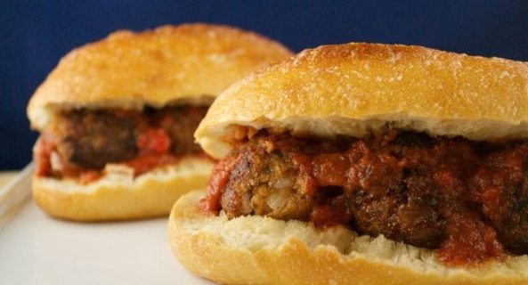

Cost: $6.00
Servings: 2
1. Preheat the broiler to low.
2. Heat the meatballs and the sauce in the microwave or on the stovetop until warm.
3. Place four meatballs on each hoagie roll, top with half of the marinara and grated soy cheese, and place on an aluminum foil-lined baking sheet.
4. Place under the broiler until the bread is toasted and the soy cheese has started to melt, or about three minutes.
Source: https://www.peta.org/living/food/vegan-meatball-subs/